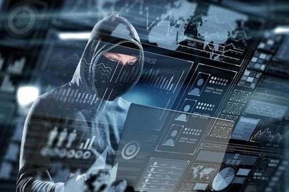
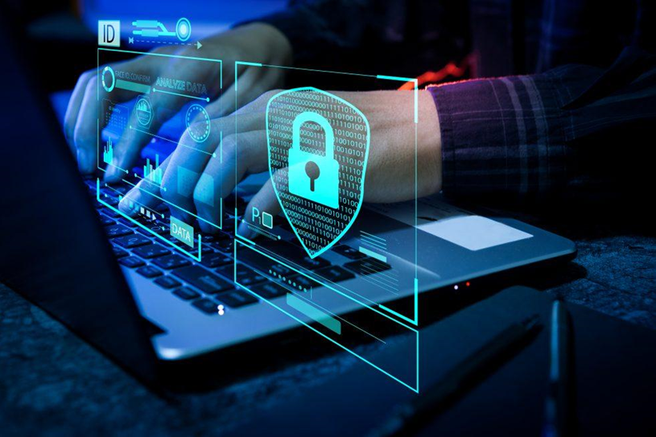
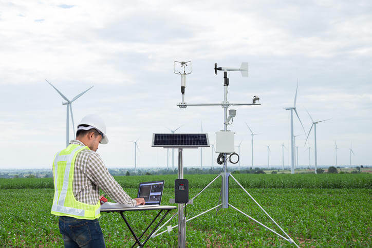

My Blog
Pentingnya Memahami Dasar-dasar Keamanan Siber

Dalam era digital yang terus berkembang, keamanan siber
menjadi semakin penting bagi individu, perusahaan, dan
organisasi. Namun, seringkali kita melupakan pentingnya
memahami dasar-dasar keamanan siber sebelum terjun ke dalam
teknologi yang lebih canggih. Dalam artikel ini, kita akan
menjelajahi beberapa prinsip dasar yang penting untuk dipahami
setiap orang dalam menjaga keamanan online mereka.
1. Sandi yang Kuat
Satu langkah pertama yang sederhana namun krusial dalam menjaga
keamanan online adalah memiliki sandi yang kuat. Hindari menggunakan
sandi yang mudah ditebak seperti tanggal lahir atau nama hewan
peliharaan Anda. Sebaliknya, gunakan kombinasi karakter yang kompleks,
termasuk huruf besar dan kecil, angka, dan simbol.
2. Pembaruan Perangkat Lunak dan Sistem Operasi
Pembaruan perangkat lunak dan sistem operasi adalah langkah penting
dalam menjaga keamanan perangkat Anda. Produsen perangkat lunak
seringkali merilis pembaruan untuk menutup celah keamanan dan
kerentanan yang dapat dieksploitasi oleh penyerang. Pastikan untuk
selalu memperbarui perangkat lunak Anda ke versi terbaru.
3. Pentingnya Backup Data
Kehilangan data bisa menjadi mimpi buruk bagi siapa pun, terutama jika
data tersebut penting atau sensitif. Untuk menghindari kehilangan
data yang tidak terduga, penting untuk secara teratur membuat salinan
cadangan (backup) dari file-file penting Anda. Backup ini harus disimpan
di lokasi yang aman dan terlindungi dari akses yang tidak sah.
4. Jangan Mengklik Tautan yang Tidak Dikenal
Salah satu cara umum di mana penyerang mencoba mendapatkan akses ke
sistem Anda adalah dengan mengirimkan tautan yang mencurigakan melalui
email atau media sosial. Hindari mengklik tautan dari sumber yang
tidak dikenal atau mencurigakan. Jika Anda ragu tentang keaslian tautan
tersebut, lebih baik abaikan atau verifikasi keasliannya terlebih dahulu.
5. Gunakan Layanan Keamanan
Terakhir, pertimbangkan untuk menggunakan layanan keamanan seperti perangkat
lunak antivirus dan firewall yang dapat membantu melindungi perangkat Anda
dari ancaman berbahaya secara online. Pilihlah layanan yang telah terbukti
efektif dan selalu perbarui definisi virus mereka secara teratur.
Dengan memahami dan menerapkan prinsip-prinsip dasar keamanan siber ini,
Anda dapat membantu melindungi diri Anda dan data Anda dari ancaman online
yang mungkin. Tetap waspada dan terus belajar tentang praktik terbaik keamanan
siber adalah kunci untuk tetap aman di dunia digital yang terus berkembang ini.
Serangan Siber Terbaru: Mengidentifikasi Ancaman dan Melindungi Diri Anda

Dunia digital terus berubah, dan begitu pula serangan siber yang terjadi di sekitar kita.
Dalam artikel ini, kita akan meninjau beberapa serangan siber terbaru yang patut
diperhatikan, serta langkah-langkah yang dapat Anda ambil untuk melindungi diri
Anda dari ancaman online.
1. Serangan Ransomware yang Menjulang
Salah satu serangan siber terbaru yang mengkhawatirkan adalah serangan ransomware
yang semakin canggih dan merajalela. Para penyerang menggunakan perangkat lunak
berbahaya ini untuk mengenkripsi data korban dan meminta tebusan dalam bentuk mata
uang digital untuk mendapatkan kunci dekripsi. Serangan semacam ini dapat menyebabkan
kerugian finansial yang besar dan bahkan mengganggu operasi bisnis.
2. Serangan Phishing yang Tersofistikasi
Serangan phishing tetap menjadi ancaman serius, dengan penyerang yang terus
mengembangkan teknik mereka untuk menipu korban. Serangan phishing yang
tersofistikasi dapat mengambil bentuk email palsu yang terlihat sangat
meyakinkan, situs web palsu, atau pesan media sosial yang menyesatkan.
Korban seringkali dipancing untuk mengungkapkan informasi sensitif seperti
kata sandi atau informasi kartu kredit.
3. Serangan Jaringan Botnet yang Meresahkan
Botnet adalah jaringan perangkat yang dikendalikan oleh penyerang untuk melakukan
serangan koordinasi, seperti serangan DDoS (Distributed Denial of Service).
Serangan jaringan botnet yang meresahkan dapat menyebabkan situs web atau
layanan online menjadi tidak tersedia, merugikan bisnis dan organisasi yang
bergantung pada ketersediaan online.
Langkah-langkah untuk Melindungi Diri dari Serangan Siber
Untuk melindungi diri Anda dari serangan siber terbaru, pertimbangkan untuk mengambil langkah-langkah berikut:
Selalu perbarui perangkat lunak dan sistem operasi Anda ke versi terbaru untuk mengatasi kerentanan keamanan.
Waspadai tanda-tanda serangan phishing, seperti email atau pesan yang meminta informasi pribadi atau menawarkan penawaran yang terlalu bagus untuk menjadi kenyataan.
Gunakan perangkat lunak keamanan yang andal, seperti antivirus dan firewall, untuk melindungi perangkat Anda dari ancaman online.
Lakukan backup data secara teratur untuk menghindari kehilangan data yang tidak terduga akibat serangan ransomware atau kerusakan perangkat.
Dengan memahami ancaman serangan siber terbaru dan mengambil langkah-langkah
yang sesuai untuk melindungi diri Anda, Anda dapat meningkatkan keamanan online
Anda dan mengurangi risiko menjadi korban serangan siber.
Teknologi dan Lingkungan: Menggabungkan Inovasi untuk Menciptakan Dunia yang Lebih Berkelanjutan

Di era modern ini, teknologi tidak hanya menjadi alat untuk meningkatkan
efisiensi dan kenyamanan, tetapi juga dapat berperan dalam melindungi
dan memperbaiki lingkungan kita yang rentan. Dalam artikel ini, kita
akan menjelajahi bagaimana inovasi teknologi dapat digunakan untuk menjaga
keberlanjutan lingkungan dan melindungi planet kita.
1. Solusi Energi Terbarukan
Salah satu kontribusi terbesar teknologi terhadap keberlanjutan lingkungan adalah
dalam pengembangan solusi energi terbarukan. Teknologi seperti panel surya, turbin
angin, dan pembangkit listrik tenaga air telah memungkinkan kita untuk menghasilkan
energi yang lebih bersih dan ramah lingkungan daripada bahan bakar fosil tradisional.
2. Pengelolaan Air yang Lebih Efisien
Teknologi juga dapat membantu dalam pengelolaan air yang lebih efisien, yang merupakan
sumber daya yang sangat penting namun terbatas. Sistem pemantauan dan manajemen air
yang didukung oleh sensor dan analitik data dapat membantu mengidentifikasi pemborosan
air dan meningkatkan efisiensi penggunaan air di berbagai sektor, termasuk pertanian,
industri, dan perkotaan.
3. Sensor Lingkungan dan IoT
Penggunaan sensor lingkungan dan Internet of Things (IoT) memungkinkan kita untuk
mengumpulkan data secara real-time tentang kondisi lingkungan seperti kualitas udara,
suhu, dan tingkat polusi. Data ini dapat digunakan untuk mengidentifikasi pola polusi,
mengukur dampak perubahan iklim, dan mengembangkan solusi yang lebih baik untuk melindungi
lingkungan kita.
4. Teknologi Hijau dalam Transportasi
Transportasi adalah salah satu penyumbang utama emisi gas rumah kaca,
tetapi teknologi hijau seperti mobil listrik, transportasi berbagi, dan
sistem transportasi cerdas dapat membantu mengurangi dampak lingkungan
transportasi. Selain itu, pengembangan kendaraan otonom dan penggunaan
algoritma optimasi rute juga dapat membantu mengurangi emisi dan kemacetan
lalu lintas.
5. Penggunaan Material Ramah Lingkungan
Inovasi dalam pengembangan material ramah lingkungan juga menjadi fokus utama
dalam upaya menjaga keberlanjutan lingkungan. Misalnya, penggunaan material daur
ulang, pengembangan material biodegradable, dan pengurangan limbah plastik dapat
membantu mengurangi dampak negatif pembuangan sampah terhadap lingkungan.
Dengan terus menggabungkan teknologi dan inovasi, kita dapat membangun masa depan
yang lebih berkelanjutan dan ramah lingkungan. Dengan kolaborasi antara ilmu pengetahuan,
teknologi, dan kesadaran lingkungan, kita dapat melindungi dan memperbaiki planet kita
untuk generasi mendatang.